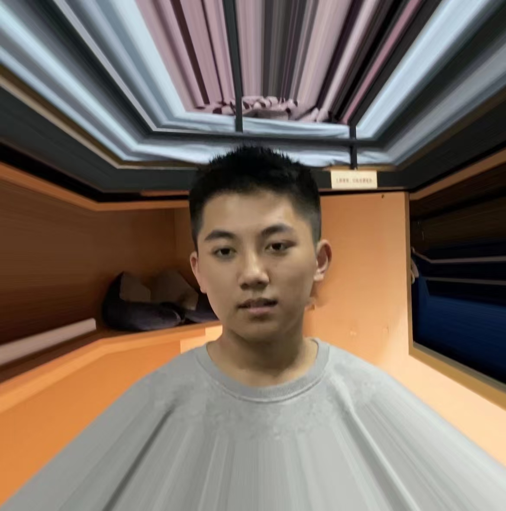

宋建昊 · Vincent
Hi 👋! Great to see you here! I am a senior undergraduate student from Tsinghua University majoring in Computer Science and Technology. I'm an innovator, explorer and builder. I am crazy about creating something new, which echoes what Greek philosopher Socrates said 2500 years ago, "Education is a kindling of a flame, not a filling of a vessel". I love that what I do really changes the world, and coding is a way for me to interact with this world.